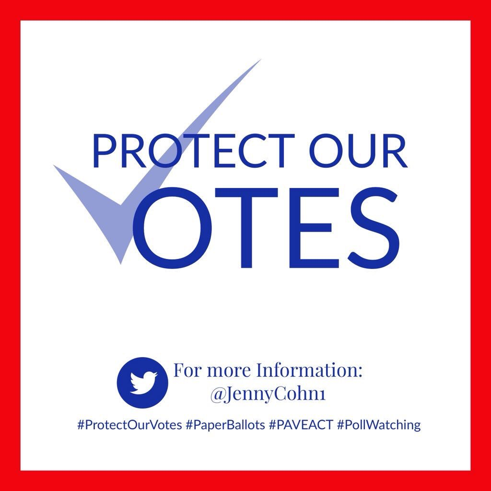

DHS, FBI say election systems in all 50 states were targeted in
2016 | Ars Technica (Apr 10 2019) <Click-to-Tweet>
The cut of their jib —
DHS, FBI say election systems in all 50 states were targeted in 2016 While the bulletin contains no new technical information, it is the first official report to confirm that the Russian reconnaissance and hacking efforts in advance of the
election went well beyond the 21 states confirmed in previous reports. While not providing specific details, the bulletin continued," The FBI and DHS assess that Russian government cyber actors probably conducted research and reconnaissance
against all US states ’ election networks leading up to the 2016 Presidential elections. We assume the Russian government researched and in some cases targeted election infrastructure in all 50 states in an attempt to sow discord and
influence the 2016 election.
Keywords: new technical information, local websites, bulletin states, russian reconnaissance, presidential elections, russian hacking efforts, research, russian, russian government cyber actors, first official report,
election, state, election systems
Abstract
We Should Be Hardening Our Defenses | Bush Center (Mar 19 2019) <Click-to-Tweet>
Melia
Recent reports reaffirm that America should “ harden our defenses ” against ongoing external attacks on our democracy
Facebook Two very important – … We must secure our electoral infrastructure and protect our electoral system from subversion. In a related Call to Action paper issued by the George W. Bush Institute on the same day, Peter Wehner and I noted
that this matters in a global strategic sense because the quality of our democracy – and whether it in fact works for all Americans – directly impacts America ’s ability to play its leadership role internationally. “ ” ” The vitality of
American democracy is thus intertwined with our country ’s ability to be strong and persuasive on the global stage.
Keywords: more countries, such meddling, elections system, criminal justice, civil liberties, bipartisan human rights organization freedom house, america, recent reports, ’s themes, american, electoral system, western
democracies, report
Abstract

Our Election Integrity Activist Resources corner provides tips that every voter can use to improve election transparency, voting rights and work against voter suppression. We also have tips to protect... Recent Posts
Protect Our Votes – We conduct election, voting machine and ballot research on a state, county and precinct level. (Nov
12 2018) <Click-to-Tweet>
Keywords: voter suppression, tips, election transparency, voting rights, election integrity activist resources corner, work, voter, suppression
Abstract